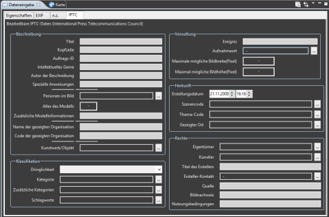

Dateneingabe
Eine bequemere Methode für die Eingabe großer Datenmengen wird von dem Dateneingabe-Sichtfenster
angeboten. Dieses Sichtfenster organisiert die verschiedenen Metadaten
in logische Gruppen. Es ermöglicht die Bearbeitung einzelner Bilder
sowie mehrerer Bilder in einem Schritt.

Das Dateneingabe-Sichtfenster wird am besten über die
Dateneingabe-Perspektive ( )
aufgerufen. Sie können zu dieser Perspektive
mit Hilfe der Taste Perspektive
öffnen in der Werkzeugleiste wechseln.
)
aufgerufen. Sie können zu dieser Perspektive
mit Hilfe der Taste Perspektive
öffnen in der Werkzeugleiste wechseln.
Tipp:
Die meisten Bildattribute sind nicht editierbar, besonders die von
einer digitalen Kamera gelieferten Attribute. In seltenen Fällen
möchten Sie diese Attribute vielleicht trotzdem ändern. Dazu stellen
Sie zunächst unter EXIF
Kameraeinstellungen die Dateiquelle auf ein
analoges Gerät wie z.B. einen Filmscanner.
Nun können die meisten Attribute geändert werden. Vergessen Sie nicht
zum Schluß die Dateiquelle
wieder auf Digitale
Kamera zu setzen.